Интернет-ресурс на тему
«Резка металла ручной ножовкой»
Выполнила: Быховская Ксения Александровна
Студент III курса, группа 109031-16
Машиностроение является важнейшей отраслью промышленности, производящей различные машины, станки, приборы и металлические предметы культурно-бытового назначения. Уровень развития машиностроения в решающей степени определяет состояние всех других отраслей промышленности, определяет производительность труда в производстве совокупного продукта и, в конечном итоге, уровень жизни людей.
Каждое изделие в машиностроении, поставляемое в условиях жесткой конкуренции на внутренний и внешний рынок, должно обладать новым уровнем свойств и отвечать всевозрастающим требованиям, предъявляемым потенциальными потребителями к функциональным, экономическим и эстетическим свойствам. Поэтому основная цель в развитии машиностроения – это постоянное улучшение качества изделий, одновременно находя оптимальный вариант сочетания вышеперечисленных свойств изделия, необходимых потребителю.
Профессия слесаря на современном предприятии является одной из наиболее распространенных профессий, и ее значение с развитием автоматизации и механизации производственных процессов возрастает, так как в значительной мере качество изготовляемой продукции и бесперебойная работа оборудования зависит от слесаря.
Слесарные работы встречаются во всех отраслях промышленности. Круг работ настолько разнообразен, что слесари, как правило, специализируются по одному виду работ: лекально-инструментальным, механосборочным, ремонтным, монтажным и др. Но основным для слесаря является выполнение таких операций как развертка, рубка, правка, гибка, резка, опиливание, сверление, зенкерование, развертывание отверстий, нарезание резьбы, шабрение, притирка и доводка, клепка и паяние.
Немало важной операцией остается резка ручной ножовкой. Востребованность ручных ножовок по металлу остается актуальной, так как этот вид инструмента имеет много плюсов и лишь один недостаток. Это первый инструмент, который был изобретен человеком для резки металлических заготовок. Сегодня же в арсенале у каждого чтущего себя мастера имеется, как минимум, один вариант среди разных видов этого инструмента. Ручная ножовка по металлу популярна тем, что инструмент всегда готов к работе при отсутствии болгарки и электричества.
Актуальность. Актуальность данной курсовой работы заключается в том, чтобы рассказать о технологии резки металла ручной ножовкой, а также применении различных средств наглядности при подаче данного материала.
Цель. Разработка содержания, средств наглядности и контроля по теме «Резка металла ручной ножовкой».
Ручные ножовки по металлу предназначаются для распиливания металлических материалов. Это не единственное назначение инструмента, так как он зарекомендовал себя хорошо по отношению к таким материалам, как пластик, ДНД, пенопласт, пенополистирол, оргстекло, керамика.
Ручная ножовка - инструмент, предназначенный для разрезания толстых листов полосового, круглого и профильного металла, а также для прорезания шлицев, пазов, обрезки и вырезки заготовок по контуру и других работ. Ручная ножовка (рис. 1, а) состоит из станка (рамки) 2 и ножовочного полотна 4. На одном конце рамки имеется неподвижная головка 5 с хвостовиком и ручкой 6, а на другом конце - подвижная головка 3 с натяжным винтом и гайкой (барашек) 7 для натяжения полотна. В головках 5 и 3 имеются прорези, в которые вставляют ножовочное полотно и крепят штифтами 7.
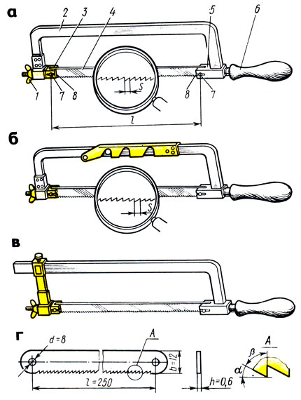
1 – гайка-барашек, 2 – рамка (станок), 3 – подвижная головка,
4 – ножовочное полотно,
5 – неподвижная головка,
6 – хвостовик с ручкой,7 – штифты, 8 – прорези
Рисунок 1 - Ручная ножовка
Рамки для ножовок изготовляют либо цельными (для ножовочного полотна одной определенной длины), либо с раздвижными (рис. 1,6), допускающими закрепление ножовочного полотна различной длины.
Станок с передвижным держателем (рис. 1, в) состоит из угольника с ручкой, по которому можно перемещать и закреплять в нужном положении держатель.
Ножовочное полотно представляет собой тонкую и узкую стальную пластину с двумя отверстиями или штифтами и с зубьями на одном из ребер. Полотна изготовляют из стали марок: У10А, Р9, Х6ВФ, твердость их HRC 61-64. В зависимости от назначения ножовочные полотна разделяются на ручные и машинные. Полотно вставляют в рамку зубьями вперед.
Размер (длина) ручного ножовочного полотна определяется по расстоянию между центрами отверстий под штифты (рис. 117, г). Наиболее часто применяют ножовочные полотна для ручных ножовок длиной I – 250-300 мм, высотой b – 12 и 16 мм, толщиной h – 0,65 и 0,8 мм.
Каждый зуб ножовочного полотна имеет форму клина (резца). На зубе, как и на резце, различают задний угол α, угол заострения β, передний угол γ и угол резания δ.
α + β + γ = 90°; α + β = δ.
Условия работы ножовочного полотна отличаются от условий работы резца, поэтому значения углов здесь иные. При резке металла большой ширины получаются пропилы значительной длины, в которых каждый зуб полотна снимает стружку, имеющую вид запятой. Эта стружка должна размещаться в стружечном пространстве до тех пор, пока острие зуба не выйдет из пропила (рис. 2, а). Величина стружечного пространства зависит от величины заднего угла α, переднего угла γ и шага S зуба (рис. 2, в).
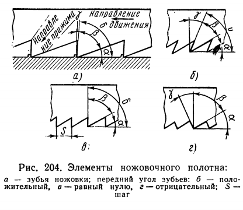
а – зубья ножовки, передний угол зубьев: б – положительный,
в – равный 0, г – отрицательный, S – шаг
Рисунок 2 - Элементы ножовочного полотна
В зависимости от твердости разрезаемого металла передний угол зубьев ножовочного полотна может быть нулевым (рис. 2, в), положительным (рис. 2, б) или отрицательным (рис. 2, г).
Производительность резания ножовочного полотна с нулевым передним углом ниже, чем полотна с передним углом больше 0°. Для резания металлов различной твердости углы заострения зубьев ножовочного полотна делаются: передний γ = 0 – 12°, задний α = 35 – 40°, заострения β = 43 – 60°.
Для разрезания более твердых материалов применяют полотна, у которых угол заострения зубьев больше, для разрезания мягких материалов угол заострения меньше. Полотна с большим углом заострения более износоустойчивы.
Для резки металлов пользуются преимущественно ножовочными полотнами с шагом 1,3 – 1,6 мм, при котором на длине 25 мм насчитывается 17 –20 зубьев. Чем толще разрезаемая заготовка, тем крупнее должны быть зубья, и наоборот, чем тоньше заготовка, тем мельче должны быть зубья ножовочного полотна. Для металлов различной твердости применяют полотна с числом зубьев: мягкие металлы – 16 зубьев; средней твердости закаленная сталь - 19 зубьев; чугун, инструментальная сталь – 22 зуба; твердая, полосовая и угловая сталь – 22 зуба.
При резании ручной ножовкой в работе должно участвовать (одновременно резать металл) не менее 2-3 зубьев. Чтобы избежать заедания (защемления) ножовочного полотна в металле, зубья разводят. Разводка зубьев ножовочного полотна делается для того, чтобы ширина разреза, сделанного ножовкой, была немного больше толщины полотна. Это предотвращает заклинивание полотна в разрезе и значительно облегчает работу. В зависимости от величины шага S разводку делают по полотну и по зубу.
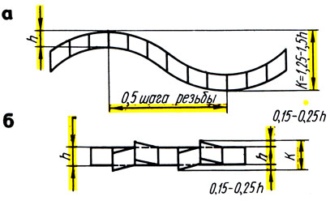
а – по полотну, б – по зубу; h – толщина полотна, К – ширина резания
Рисунок 3 - Схема разводки полотна
Ножовочные полотна с шагом зубьев 0,8 мм (допускается также для шага 1 мм) должны иметь разводку зубьев по полотну (волнистой) (рис. 3, а), т. е. каждые два смежных зуба отгибают в противоположные стороны на 0,25 – 0,6 мм. Разводка выполняется на высоте не более удвоенной высоты зуба. Шаг разводки принимается равным 8S.
Полотно с шагом зубьев свыше 0,8 мм разводят по зубу (рис. 3, б) (гофрированный развод). При этом разводе при малом шаге зубьев 2-3 зуба отводят вправо и 2-3 влево. При среднем шаге отводят один зуб влево, второй - вправо, третий не отводят. При крупном шаге отводят один зуб влево, а второй вправо. Разводка по зубу применяется для полотен с шагом 1,25 и 1,6 мм.
Перед работой ножовочным станком (ножовкой) прочно закрепляют разрезаемый материал в тисках. Уровень крепления металла в тисках должен соответствовать росту работающего. Затем выбирают ножовочное полотно, сообразуясь с твердостью, формой и размерами разрезаемого металла.
При длинных пропилах берут ножовочные полотна с крупным шагом зубьев, а при коротких - с мелким шагом зубьев.
Ножовочное полотно устанавливают в прорези головки так, чтобы зубья были направлены от ручки (рис. 4, а), а не к ручке (рис. 4, б). При этом сначала вставляют конец полотна в неподвижную головку и фиксируют положение закладкой штифта, затем вставляют второй конец полотна в прорезь подвижного штыря и закрепляют его штифтом. Натягивают полотно вручную без большого усилия (запрещается применение плоскогубцев, тисков и др.) вращением барашковой гайки. При этом из-за опасения разрыва полотна ножовку держат удаленной от лица. [15]
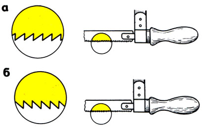
Рисунок 4 - Установка ножовочного
полотна
а – правильно, б – неправильно
Туго натянутое полотно при незначительном перекосе и слабо натянутое при усиленном нажиме создают перегиб полотна и могут вызвать излом.
При резке металла ручной ножовкой становятся перед тисками прямо, свободно и устойчиво, вполоборота по отношению к губкам тисков или оси обрабатываемого предмета (рис. 5). Левую ногу (рис. 5, г) несколько выставляют вперед, примерно по линии разрезаемого предмета, и на нее опирают корпус. Правая нога должна быть повернута по отношению к левой на угол 60 - 70°.
Положение рук (хватка). Поза рабочего считается правильной, если правая рука с ножовкой, установленной на губки тисков (в исходное положение), согнутая в локте, образует прямой угол (90°) между плечевой и локтевой частями руки (рис. 5, а). Ручку (рукоятку) захватывают правой рукой так, чтобы ручка упиралась в ладонь (рис. 5,6). Ручку обхватывают четырьмя пальцами, большой палец накладывают сверху вдоль ручки. Пальцами левой руки обхватывают гайку и подвижную головку ножовки (рис. 5, в).
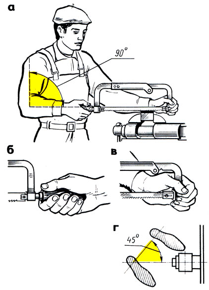
Рисунок 5 - Положение при работе
а – корпуса и ножовки, б – правой руки, в – левой руки, г – ног
При резке ножовкой, как и при опиливании, должна соблюдаться строгая координация усилий (балансировка), заключающаяся в правильном увеличении нажима рук. Движение ножовки должно быть строго горизонтальным. Нажимают на станок обеими руками, но усилие делают левой рукой, а правой рукой осуществляют главным образом возвратно-поступательное движение ножовки. [17]
Процесс резки состоит из двух ходов: рабочего, когда ножовка перемещается вперед от работающего, и холостого, когда ножовка перемещается назад по направлению к работающему. При холостом ходе на ножовку не нажимают, в результате чего зубья только скользят, а при рабочем ходе обеими руками создают легкий нажим так, чтобы ножовка двигалась прямолинейно. При работе ножовкой необходимо выполнять следующие правила:
• короткие заготовки режут по наиболее широкой стороне. При резании проката углового, таврового и швеллерного профилей лучше изменять положение заготовки, чем резать по узкой стороне;
• в работе должно участвовать все ножовочное полотно;
• работают ножовкой не спеша, плавно, без рывков, делая не более 30-60 двойных ходов в минуту. При более быстрых темпах скорее наступает утомляемость, и, кроме того, полотно нагревается и быстрее тупится;
• перед окончанием распила ослабляют нажим на ножовку, так как при сильном нажиме ножовочное полотно резко выскакивает из распила, ударяясь о тиски или деталь, в результате чего может нанести травму;
• при резке не давать полотну нагреваться. Для уменьшения трения полотна о стенки в пропиле детали периодически смазывают полотно минеральным маслом или графитовой смазкой, особенно при резке вязких металлов;
• латунь и бронзу разрезают только новыми полотнами, так как даже мало изношенные зубья не режут, а скользят;
• в случае поломки или выкрашивания хотя бы одного зуба работу немедленно прекращают, удаляют из при пила остатки сломанного зуба, полотно заменяют новым или стачивают на станке 2-3 соседних зуба и после этого продолжают работу. [20]
Круглый металл небольших сечений режут ручными ножовками, а заготовки больших диаметров - на отрезных станках, приводных ножовках, дисковых пилах и других станках. На заготовку предварительно наносят разметочную риску, затем заготовку зажимают в слесарных тисках в горизонтальном положении и трехгранным напильником по разметочной риске делают неглубокий пропил для лучшего направления ножовочного полотна. Предварительно полотно смазывают маслом кисточкой.
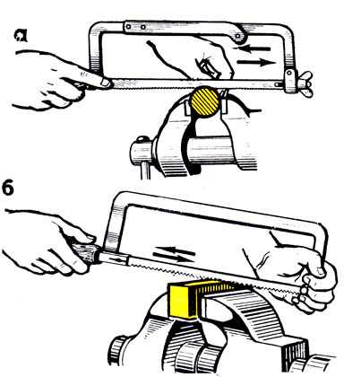
Рисунок 6 - Начало резки ножовкой
металла: а – круглого, б – квадратного
Установив в пропил ножовку, производят отрезку без отламывания отрезаемой части. Отламывание допускается в том случае, если торцы заготовки будут подвергаться обработке (опиливанию). В этом случае в прутке делают надрезы с двух - четырех сторон, а затем его отламывают, или зажав в тисках, или при помощи молотка, которым наносят удары по прутку (заготовку при этом устанавливают на подкладки).
Для правильного начала реза на неразмеченной заготовке у места реза ставят ногтем большой палец левой руки и полотно ножовки примыкают вплотную к ногтю (рис. 6, а), ножовку держат только правой рукой. Указательный палец этой руки вытягивают вдоль ручки сбоку. Этим обеспечивается устойчивое положение ножовки во время резки. [21]
Резка квадратного металла. Заготовку закрепляют в тисках и в месте будущего реза трехгранным напильником делают неглубокий пропил для лучшего направления ножовки или запиливают металл. В начале операции ножовку наклоняют в сторону от себя (вперед). По мере врезания наклон постепенно уменьшают до тех пор, пока рез не дойдет до противоположной кромки заготовки. Затем заготовку разрезают при горизонтальном положении ножовки (рис. 6, 6).
Полосовой материал рациональнее резать не по широкой, а по узкой стороне. Это, однако, можно сделать при толщине полосы больше расстояния между тремя зубьями полотна.
При очень глубоких резах левую руку переставляют, берясь за верх рамки (рис. 7, г).
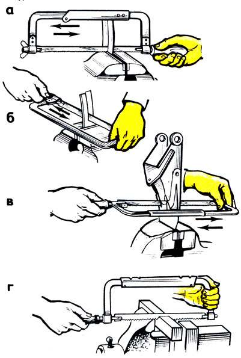
Рисунок 7 - Резка ножовкой
а – без поворота полотна, б – с поворотом на 90° полотна,
в – работа в замкнутом контуре,
г – положение пальцев левой руки
при глубоких прорезах
Резание ножовкой с поворотом полотна осуществляют при длинных (высоких) или глубоких резах, когда не удается довести рез до конца из-за того, что рамка ножовки упирается в торец заготовки и мешает дальнейшему пропиливанию (рис. 7, а). При этом меняют положение заготовки и, врезавшись в нее с другого конца, заканчивают резку. [18]
днако есть другой способ: резать ножовкой, полотно которой повернуто на 90° (рис. 7, 6). Для этого полотно переставляют в боковые прорези головок рамки. При таком положении ножовки работают осторожно, так как при перекосе рамки ножовочное полотно может сломаться. Этим способом также режут металл в деталях с замкнутыми контурами (рис. 7, в).
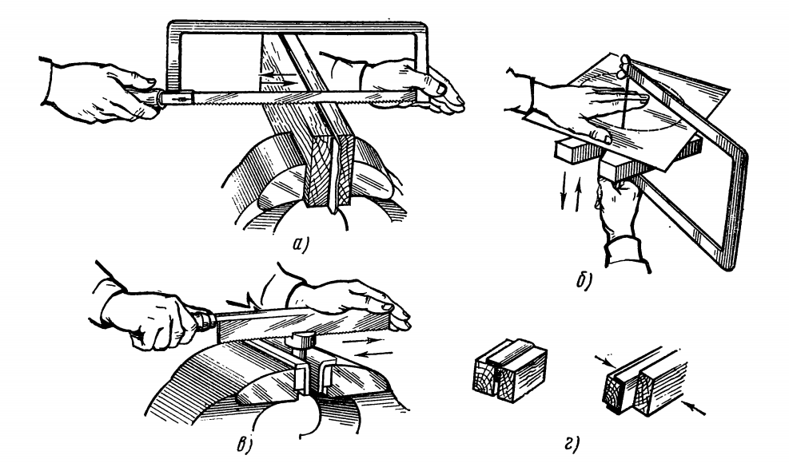
Рисунок 8 - Работа ножовкой
а – резка тонкого листа, б – вырезание фасонного отверстия лобзиком,
в – прорезание шлицев,
г – тонкие профили, закрепленные для резки
Резка тонкого листового и профильного металла. Заготовки, детали из тонкого листового материала зажимают между деревянными брусками по одной или по несколько штук и разрезают вместе с брусками (рис. 8, а).
Резка по криволинейным контурам. Чтобы вырезать в металле (листе) фасонное окно (отверстие), просверливают или вырубают отверстие диаметром, равным ширине полотна ножовки или пилы лобзика. Пропустив через это отверстие полотно, закрепляют его в рамке и режут по заданному направлению (рис. 8, 6).
Шлицы крупных размеров прорезают обыкновенными ножовками с одним или двумя (в зависимости от ширины шлицев) соединенными вместе полотнами (рис. 8, в). Тонкие профили разрезают в плоских деревянных брусках (рис. 8, г). [21]
Технические средства обучения — совокупность технических устройств с дидактическим обеспечением, применяемых в учебно-воспитательном процессе для предъявления и обработки информации с целью его оптимизации. ТСО объединяют два понятия: технические устройства и дидактические средства обучения, которые с помощью этих устройств воспроизводятся. [1]
В англоязычных источниках ТСО называют аудиовизуальными средствами, которые делятся на жесткие и мягкие. К жестким относятся магнитофоны, проекторы, телевизоры, компьютеры, к мягким носителям информации: грампластинки, магнитная лента, магнитные и оптические диски, слайды, кинофильмы.
Классифицировать технические средства обучения сложно в силу разнообразия их устройства, функциональных возможностей, способов предъявления информации. Перечислим их основные классификации:
1. По функциональному назначению.
2. Принципу устройства и работы.
3. Роду обучения.
4. Логике работы.
5. Характеру воздействия на органы чувств.
6. Характеру предъявления информации. [2]
По функциональному назначению ТСО подразделяют на технические средства передачи учебной информации, контроля знаний, тренажерные, обучения и самообучения, вспомогательные. Кроме того, существуют технические средства, совмещающие функции различного назначения — комбинированные.
Технические средства передачи информации: диапроекторы, эпипроекторы, магнитофоны, радиоустановки, музыкальные центры, проигрыватели, радиоузлы, кинопроекторы и киноустановки, телевизоры, видеомагнитофоны, ПЭВМ и т.п. Их особенность — это преобразование информации, записанной на том или ином носителе, в удобную для восприятия форму. Технические средства контроля объединяют всевозможные технические устройства и комплексы, позволяющие по определенной программе и заданным критериям с той или иной степенью достоверности оценивать степень усвоения учебного материала.
Контролирующие ТСО бывают индивидуальные и групповые. Они отличаются типом обучающих программ и методом ввода ответа учащихся. По степени сложности ТСО контроля знаний варьируются от простых карт, кассет и билетов автоматизированного контроля до специальных компьютерных программ. Однако применение этих устройств, как показала практика, целесообразно лишь в узких пределах и не может заменить непосредственные контакты учителя с учащимися во время анализа и оценки результатов их работы.
Технические средства обучения и самообучения обеспечивают предъявление учебной информации обучаемым по определенным программам, заложенным в технические устройства, и самоконтроль усвоения знаний. Такие программы подают учебный материал в виде небольших доз, после каждой из которых следует контрольный вопрос. Скорость усвоения материала устанавливается в зависимости от индивидуальных возможностей, потребностей и способностей обучаемого. Обучающие программы бывают:
• Линейные. Не зависят от правильности ответа по каждой порции материала.
• Разветвленные. Дают возможность продвигаться по ним только при условии правильного ответа.
• Комбинированные. Сочетают в себе оба варианта.
Тренажерные технические средства — специализированные учебно-тренировочные устройства, которые предназначены для формирования первоначальных умений и навыков.
Вспомогательные технические средства объединяют средства малой автоматизации (механизации) и аппараты, используемые для вспомогательных целей: движущиеся ленточные классные доски, устройства для перемещения карт, плакатов.
К комбинированным техническим средствам, выполняющим несколько функций, относятся лингафонные устройства, замкнутые учебные телевизионные системы, компьютерные системы. По принципу устройства и работы ТСО бывают:
1. Механические.
2. Электромеханические.
3. Оптические.
4. Звукотехнические.
5. Электронные.
6. Комбинированные.
По роду обучения выделяют технические устройства индивидуального, группового и поточного пользования. По логике работы ТСО могут быть с линейной программой работы, т.е. не зависеть от обратной связи, и с разветвленной программой, обеспечивающей различные режимы работы в зависимости от качества и объема обратной связи. По характеру воздействия на органы чувств выделяют визуальные, аудиосредства и аудиовизуальные ТСО. По характеру предъявления информации ТСО можно разделить на экранные, звуковые и экранно-звуковые средства.
К средствам обучения предъявляют функциональные, педагогические, эргономические, эстетические, экономические требования. Функциональные — способность аппаратуры обеспечивать необходимые режимы работы. Педагогические — соответствие возможностей технического средства тем формам и методам учебно-воспитательного процесса, которые согласуются с современными требованиями. Эргономические — удобство и безопасность эксплуатации; минимальное количество операций при подготовке и работе с аппаратом; уровень шума; удобство осмотра, ремонта, транспортирования. Эстетические — гармония формы, т.е. наглядное выражение назначения, масштаб, соразмерность, а также целостность композиции, товарный вид. Экономические — относительно невысокая стоимость при высоком качестве и долговечности технических средств.
Функции ТСО в учебно-воспитательном процессе многообразны. Они взаимодополняющие, взаимообусловленные, и выделение их достаточно условно. Не все функции могут быть присущи тому или иному ТСО в полном объеме. Первая — коммуникативная, функция передачи информации. Вторая — управленческая, предполагающая подготовку учащихся к выполнению заданий и организацию их выполнения, получение обратной связи в процессе восприятия и усвоения информации и коррекцию этих процессов. Третья — кумулятивная, т. е. хранение, систематизация учебной и учебно-методической информации. Это осуществляется через комплектование и создание фоно- и видеотек, накопление, сохранение и передачу информации с помощью современных информационных технологий. Четвертая — научно-исследовательская функция, связана с пре-образованием получаемой с помощью ТСО информации учащимися с исследовательской целью и с поиском вариантов использования технических средств обучения и воспитания педагогом, моделированием содержания и форм подачи информации. [5]
Проекция — оптическое изображение объекта увеличенного размера на рассеивающей поверхности, служащей экраном.
Неподвижное изображение на экране можно получить двумя способами проекции: диапроекцией и эпипроекцией. Подвижное изображение — это кинопроекция немого кино и не озвученных анимационных фильмов.
Различают проекции диаскопическую и эпископическую, плоскую, стереоскопическую и голографическую, статическую и динамическую. При диаскопической проекции изображение на экране создается световыми лучами, проходящими сквозь прозрачный носитель информации. При эпископической проекции изображение на экране создается световыми лучами, отражаемыми и рассеиваемыми непрозрачными источниками информации. Плоская проекция обеспечивает получение двухмерного изображения соответствующего объекта.
Стереоскопическая проекция обеспечивает получение изображения, создающего иллюзию объемности объекта, пространственности наблюдаемой картины.
Носителями информации для стереоскопической проекции служат плоские цветные или черно-белые стереопары — совокупность двух изображений одного и того же объекта, полученных с двух ракурсов. Голографическая проекция обеспечивает получение объемного изображения объекта. Для голографической проекции носителями информации служат голограммы — зафиксированные излучения, рассеиваемые объектом, на плоской основе. К числу статических экранных средств обучения и воспитания относятся диапозитивы, диафильмы, транспаранты, эпиобъекты. В настоящее время в некоторых пособиях их называют видеограммами, определяя их как визуальный образ, предназначенный для представления учебной информации посредством проекции. [6]
Диапозитивы — фотографическое позитивное изображение на прозрачной основе, рассматриваемое на просвет или проецируемое на экран, предназначенное для учебных и воспитательных целей. Могут быть черно-белые и цветные, озвученные и неозвученные.
По характеру изображений диапозитивы бывают штриховые и полутоновые. На штриховых диапозитивах изображение выполняют линиями, штрихами, точками и сплошной заливкой. Так выполняют схемы, чертежи, штриховые рисунки, таблицы, текст. Полутоновые диапозитивы — это фотографии, рисунки, выполненные карандашом с растушевкой, тушью, пастелью с плавным переходом от затемненных участков к свету.
Диапозитивы могут быть выполнены на стеклянной или пленочной основе. Достоинство стекла — отсутствие коробления, нагреваемого во время демонстрирования диапозитива. Недостатки — хрупкость, плохая транспортабельность и большая масса. Диапозитивы подразделяются на крупноформатные, рассматриваемые невооруженным глазом на просвет, и малоформатные для показа с помощью проекционных аппаратов. Крупноформатные диапозитивы используют для оформления классных комнат и рекреаций образовательных учреждений в виде витражей, подсвечиваемых стендов.
Применять диапозитивы в просветительных целях начали во второй половине XIX в. Демонстрировали их проекционным фонарем, изобретенным еще в 1640 г. физиком Афанасием Кирхером. В книге Н. И. Борисова «Волшебный фонарь в народной школе», опубликованной в 1869 году, указывалось, что стеклянные диапозитивы, которые демонстрировались при помощи проекционного фонаря, использовались не только в высших учебных заведениях, но также в полковых учебных командах и народных школах.
В начале века в Москве уже существовало производство черно—белых и раскрашенных учебных диапозитивов по предметам школьной программы. В 1904—1905 годах появились первые диафильмы на целлулоидной пленке. Широкое применение они нашли в советской школе. В системе наглядных средств им отводят как самостоятельную, так и вспомогательную роль в качестве средства, уточняющего понятия, получаемые с помощью других технических средств — кино- и видеофильмов, теле- и радиопередач.
Работа в классе с диапозитивами во многом подобна работе с учебной настенной картиной. Но в отличие от последней диапозитив имеет свои преимущества: спроецированный на экран, он образует большую световую картину, позволяющую ученикам, сидящим в конце класса, детально рассмотреть изображение. Диапозитив можно задержать на экране столько времени, сколько необходимо учителю.
Для успешного усвоения содержания диапозитива изображение не должно быть перегруженным малосущественными деталями, загромождающими картину и отвлекающими внимание учеников от главного.
Текст диапозитива должен быть лаконичен. Он дает понятие о том, что изображено в кадре, не раскрывая его содержания в подробностях. Такой текст удобен для использования диапозитивов по отдельности. Иногда в диапозитивной серии делается попытка излагать ее содержание от кадра к кадру в виде связного текста, предполагающего показ всей серии именно в том порядке, который предусмотрен ее автором.
Диапозитивный фильм — это серия черно-белых или цветных диапозитивов, объединенных в единое произведение и отпечатанных на кинопленке в определенной последовательности. Только при просмотре кадров диафильма в той последовательности, как это задумано автором, можно получить необходимый учебный, воспитательный и эмоциональный эффект. На ленте обычно монтируют от 25 до 45 кадров. Диафильмы бывают с размером кадра 18 х 24 мм или 24 х 36 мм. Диафильмы также бывают озвученные и неозвученные. Диафильм можно считать переходным наглядным средством обучения от статической световой картины к кинофильму. Только в диафильме кадр несет большую смысловую нагрузку, нередко отражая то, что по смыслу в динамических кинокадрах равноценно эпизоду или небольшой сцене. Как и в кинофильме, в диафильме часто одни кадры раскрывают замысел, тему произведения, другие служат связующими звеньями, помогающими глубже раскрыть содержание основных кадров, например, путем укрупнения существенных для понимания содержания деталей предыдущего кадра. [6]
При изготовлении диафильмов используют различные приемы монтажа, внутрикадрового построения изображения, композиции кадра. Монтаж обеспечивает выделение сущности, наиболее важного, главного в объекте или явлении. Он несет определенную идею, мысль, причем раскрывает ее в движении, становлении. В учебном процессе монтажное сочетание кадров диафильма, как и кинофильма, служит инструментом формирования мысли ученика.
Текст в диафильме играет значительно большую роль, чем в серии диапозитивов. Он раскрывает идею и содержание произведения, смысловые связи, поясняет, помогает лучше воспринимать зрительные образы.
Увязывая предыдущий кадр с последующим и будучи тесно связан с изображением, текст служит как бы элементом монтажа, в целом образуя законченное, самостоятельное литературное произведение. В силу ограниченности места в кадре язык текста предельно лаконичен и выразителен. В ряде диафильмов в конце или через определенные порции материала предлагаются вопросы и задания для проверки усвоения материала учениками. [4]
Учитель или воспитатель, выбирающий диафильм, обращает внимание на взаимосвязь текста и изображения, учитывает, насколько они помогают друг другу раскрывать содержание. Плохо, когда в тексте говорится о действии, не отраженном в кадрах. В этом случае содержание диафильма усваивается хуже, и дети не всегда улавливают все взаимосвязи.
В свою очередь, и изображение часто выходит за рамки иллюстрируемого текста, углубляя содержание произведения и акцентируя внимание зрителя на том, что автор упоминает лишь вскользь.
В художественных диафильмах кроме повествовательного текста используют и прямую речь. Диалоги оживляют диафильм, заставляют его персонажей играть, что повышает эмоциональное воздействие произведения, придает действию динамичность. Сюжет в диафильмах развертывается не так постепенно, как в кинофильме. В нем ощущаются смысловые пропуски, скачки в изобразительной части. Пропущенные эпизоды зритель восполняет мысленно. Чтобы легче, безболезненнее проходил этот процесс восполнения отсутствующих звеньев в цепи повествования, в диафильме слово и изображение постоянно передают ведущую роль: в одних кадрах главенствует в развитии сюжета изображение, в других — текст. Поэтому существуют также диафильмы, где текст дается в кад¬рах или в сопроводительной брошюре, и диафильмы с записью текста и музыки на грампластинке или магнитной.
Применяются в диафильмах и целиком текстовые кадры без изображения, или титры. Прибегают к ним, когда содержание не поддается иллюстрированию. Обычно они совпадают с паузами при переходе от одной сюжетной линии к другой, развивающейся параллельно. Часто диафильм начинается со вступительного титра, знакомящего со сведениями общего порядка, рисующими историческую обстановку или географическое положение местности, где раз¬вертывается событие, и т. п.
К сожалению, прекрасное дидактическое средство обучения и воспитания, каким является диафильм, активно вытесняется современными ТСО с другими носителями информации. Диафильмы всегда были недорогими, доступными, выпускались в большом количестве и самой разнообразной тематики, жанра и назначения. Проста в пользовании и аппаратура для их трансляции. Во многих образовательных учреждениях страны бережно сохраняют накопленные фонотеки и фильмоскопы, которые могут еще использоваться определенное время, но без восполнения и обновления скоро сойдут на нет. [5]
Проекционные аппараты — оптические устройства, образующие на экране увеличенные изображения различных объектов. Источником света служит специальная электрическая лампа накаливания — проекционная лампа.
Зеркальный отражатель — вогнутое сферическое зеркало для отражения световых лучей.
Конденсор — оптическая система, которая собирает расходящиеся лучи, испускаемые проекционной лампой, и обеспечивает равномерное освещение объекта проекции. В проекционных аппаратах встречаются конденсоры, со¬стоящие из двух или трех линз различного диаметра и кривизны поверхности.
Проекционный объектив — линзовая оптическая система для получения на экране увеличенного резкого изображения предмета. Основные характеристики объективов: фокусное расстояние, относительное отверстие. Объективы для проекционных аппаратов подразделяют на короткофокусные, нормальные и длиннофокусные. [3]
Проекционная лампа, зеркальные отражатели, конденсор и объектив образуют осветительно-проекционную систему проекционного аппарата. Механическая часть аппарата служит для фиксации объектов проекции относительно осветительно-проекционной системы, обеспечения смены объектов проецирования и требуемой длительности их пребывания на экране.
Качество получаемого на экране изображения при использовании проекционных аппаратов любого типа зависит от величины создаваемого проектором светового потока, качества оптики, размеров кадрового окна, расстояния до экрана, угла наклона оси проецирования, цветности, от тщательности исполнения носителей информации, отражающей способности, угла наклона и степени боковой засветки экрана (рисунок 1)
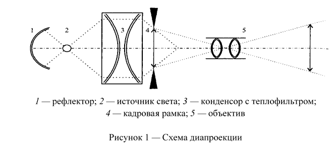
Рисунок 8 - Схема диапроекции
1 — рефлектор; 2 — источник света; 3 — конденсор с теплофильтром;
4 — кадровая рамка; 5 — объектив
Световой поток — основная характеристика проектора любого типа. Световой поток оценивает мощность оптического излучения по вызываемому им световому ощущению и измеряется в люменах. Фокусными расстояниями оптической системы проектора называют расстояния от его главных точек до соответствующих им фокусов.
В большинстве школьных проекционных аппаратов устанавливают кварцевые галогенные малогабаритные (КГМ) лампы накаливания. Эти лампы обладают рядом преимуществ перед обычными лампами накаливания: у них практически постоянны в течение всего срока службы световой поток и цветовая температура; более высокая световая отдача; больший срок службы и значительно меньшие размеры; большая механическая прочность.
Основная часть лампы — вольфрамовая нить накала заключена в кварцевой колбе небольших размеров. Колба наполнена газом с небольшим добавлением йода или другого галогена. Для вводов в галогенной лампе используют молибденовую фольгу или проволоку, которую впаивают в кварц. Максимальная температура мо¬либденовых вводов в этих лампах не должна превышать 350 °С, так как при более высокой температуре молибден окисляется, кварц может лопнуть, и лампа выйдет из строя. Эту особенность кварцевых галогенных ламп следует учитывать при эксплуатации: их не рекомендуется применять без принудительной вентиляции, которую чаще всего осуществляют электрическим вентилятором.
В работе с этими лампами следует соблюдать еще одну предосторожность: баллон лампы нельзя брать незащищенными руками, потому что отпечатки пальцев загрязняют поверхность лампы, вызывают ее затемнение, а, следовательно, уменьшение полезного светового потока и преждевременный выход лампы из строя. Маркировка проекционных ламп наносится на цоколь баллона. Она состоит из букв и двух групп цифр, обозначающих тип лампы, напряжение накала и потребляемую мощность.
Качество проекционного аппарата зависит не только от источника света, но и от использования излучаемого им света. С целью лучшего использования света увеличивают угол захвата, т.е. добиваются, чтобы осветительная система аппарата захватывала возможно большую часть светового потока, создаваемого источником света. Осветительно-проекционная система всех типов диапроекторов расположена горизонтально, а объект проекции расположен вертикально. Световой поток от проекционной лампы, отраженный рефлектором, проходит через конденсор, кадровое окно с диапозитивом и объектив, образуя на экране увеличенное изображение объекта. [5]
Особую схему диапроекции имеют кодоскопы. Осветительно-проекционная система кодопроектора расположена вертикально, а объект проекции — горизонтально. Световой поток от проекционной лампы отражается рефлектором вертикалью вверх, проходит через конденсор и предметный столик с кодопозитивом, попадает в объектив с поворотным зеркалом и формирует на экране увеличенное изображение объекта (рисунок 2).
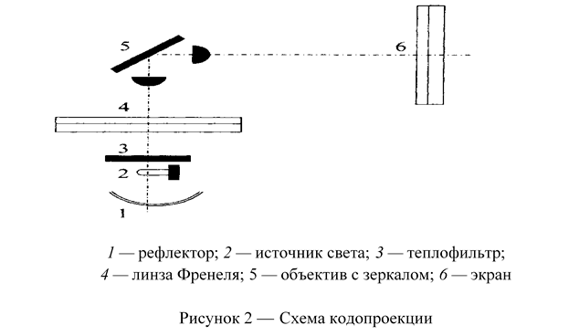
Рисунок 9 - Схема кодопроекции
1 — рефлектор; 2 — источник света; 3 — теплофильтр;
4 — линза Френеля; 5 — объектив с зеркалом; 6 — экран
Первый проектор, как уже упоминалось, появился в 1640 г. Его изобрел немецкий физик и математик, монах Афанасий Кирхер. В латинском трактате «Великое искусство света и тени». Аппарат позволял создавать теневые проекции изображений людей, животных или предметов, вырезанных из картона. Источником света служила свеча.
По степени автоматизации процессов фокусирования и смены кадров различают проекторы с полностью автоматическим устройством, с полуавтоматическим и неавтоматическим управлением. Аппараты с полностью автоматическим устройством работают без оператора по заданной программе и оснащены авто фокусирующим устройством. [5]
Важнейшим компонентом современных информационных технологий, используемых в образовании, стали электронные интерактивные доски. Такие доски выглядят как обычные маркерные доски, но все, что пишется на электронной интерактивной доске, мгновенно появляется на персональном компьютере. Написанная информация хранится в файловом виде и может быть распечатана на обычном принтере. Надписи и рисунки на электронной интерактивной доске могут оформляться цветными маркерами, и при наличии цветного принтера, копии тоже будут цветными. Использование цвета позволяет выделить информацию и значительно увеличить эффективность ее восприятия.
Основное достоинство электронных интерактивных досок — возможность анимации: просмотра сделанных рисунков, записи лекции в реальном времени. Электронные интерактивные доски — универсальное средство для обеспечения учебного процесса. Все записанные на интерактивной электронной доске в ходе обсуждения идеи надежно хранятся в компьютере и могут быть последовательно восстановлены.
Программное обеспечение, поставляемое вместе с электронными интерактивными досками, позволяет значительно расширить географию аудитории, проводя семинары одновременно в нескольких городах страны. Слушатели таких семинаров читать информацию со своих мониторов или проецировать на большой экран для коллективного обсуждения. Электронная интерактивная доска — огромный сенсорный экран, на котором с помощью маркера можно вызывать различные функции пользовательского интерфейса. Электронные интерактивные доски позволяют сочетать все преимущества классической презентации с возможностями высоких технологий. Мультимедиа-проектор, подключенный к электронной интерактивной доске, позволяет работать в мультимедийной среде, сочетая классический тип презентации с демонстрацией информации из Интернета, с видеомагнитофона, с компьютера, DVD-дисков, флэш-памяти или с видеокамеры.
Рассмотрим технологии, которые используются в электронных интерактивных досках. Сенсорная резистивная электронная интерактивная доска состоит из двух слоев тончайших проводников, которые реагируют на прикосновение к поверхности экрана.
Такие доски подходят для учебных заведений: они надежны и не требуют каких-либо специальных приспособлений, которые могут потеряться или сломаться. На них можно писать не только маркером, но и просто пальцем.
Эта технология не требует применения специальных маркеров, не использует никаких излучений для работы и не подвержена внешним помехам. Недостатком этой технологии является небольшая задержка реакции матрицы при быстром перемещении маркера или заменяющего его предмета. Электромагнитная технология основана на передаче электронных сигналов с пишущего устройства, которым может быть либо специальный электронный карандаш, либо вложенные в электронные держатели маркеры.
К достоинствам следует отнести возможность создания твердой и прочной поверхности. К недостаткам — работа с электромагнитным излучением и необходимость использования специального маркера.
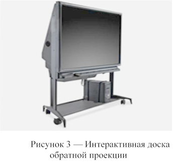Рисунок 10 - Интерактивная доска обратной проекции
Интерактивные доски бывают прямой проекции — проектор помещается перед ней на подставке или на потолке, доски обратной проекции — проектор располагается сзади и составляет единую конструкцию с доской, благодаря чему человек стоящий перед ней не перекрывает световой поток проектора (рисунок 3). Можно менять высоту экрана, поворачивая ручку на корпусе. Чтобы сохранить написанную на доске информацию, совсем необязательно переписывать все от руки — для этого существуют электронные копирующие доски. Достаточно нажать одну кнопку на устройстве, встроенном в электронную доску, и информация, что написанная на электронной копирующей доске, будет распечатана или сохранена на флэш-накопителе. Интерактивные доски позволяют уйти от привнесенной компьютерной культурой чисто презентационной формы подачи материала, экономят время занятия за счет отказа от конспектирования.
Студенты по окончании занятия могут получить файл с его записью, который можно дома просмотреть на ПК. Интерактивные доски повышают эффективность подачи материала.
Для того чтобы эффективно проводить занятия с использованием интерактивной доски можно использовать следующий алгоритм, следуя которому преподаватель может успешно подготовиться к занятию с использованием интерактивной доски:
1. Определить тему, цель и тип занятия.
2. Составить временную структуру занятия, в соответствии с главной целью наметить задачи и необходимые этапы для их достижения.
3. Продумать этапы, на которых необходимы инструменты интерактивной доски.
4. Из резервов компьютерного обеспечения отбираются наиболее эффективные средства.
5. Рассматривается целесообразность их применения в сравнении с традиционными средствами.
6. Отобранные материалы оцениваются во времени: их продолжительность не должна превышать санитарных норм; рекомендуется просмотреть и прохронометрировать все материалы, учесть интерактивный характер материала.
7. Составляется временная развертка учебного занятия.
8. При недостатке компьютерного иллюстрированного или программного материала проводится поиск в библиотеке или Интернете, или составляется авторская программа.
9. Из найденного материала собирается презентационная программа. Для этого пишется ее сценарий.
10. Заранее подготовить студентов к восприятию занятия с использованием интерактивной доски.
Экран плазменного дисплея может быть намного больше телевизионного, при этом он не испускает вредных электромагнитных излучений. Помимо размеров, основным достоинством панели является более высокая, чем у телевизоров и мониторов, контрастность изображения и угол обзора. Плазменные дисплеи также отличаются от кинескопов отсутствием мерцания изображения, что позволяет зрителям не утомляться при просмотре. Благодаря всем этим достоинствам плазменные панели нашли применение в качестве отображения средств наглядности на занятиях, выставках, информационных стендов. [1]
Ручные ножовки по металлу предназначаются для распиливания металлических материалов. Это не единственное назначение инструмента, так как он зарекомендовал себя хорошо по отношению к таким материалам, как пластик, ДНД, пенопласт, пенополистирол, оргстекло, керамика.
Ручная ножовка - инструмент, предназначенный для разрезания толстых листов полосового, круглого и профильного металла, а также для прорезания шлицев, пазов, обрезки и вырезки заготовок по контуру и других работ.
При резке ножовкой, как и при опиливании, должна соблюдаться строгая координация усилий (балансировка), заключающаяся в правильном увеличении нажима рук. Движение ножовки должно быть строго горизонтальным. Нажимают на станок обеими руками, но наибольшее усилие делают левой рукой, а правой рукой осуществляют главным образом возвратно-поступательное движение ножовки.
Процесс резки состоит из двух ходов: рабочего, когда ножовка перемещается вперед от работающего, и холостого, когда ножовка перемещается назад по направлению к работающему. При холостом ходе на ножовку не нажимают, в результате чего зубья только скользят, а при рабочем ходе обеими руками создают легкий нажим так, чтобы ножовка двигалась прямолинейно.
Ножовкой можно резать как листовой, так и металл с круглым, квадратным сечениями, закрепив заготовку в тисках. Резка осуществляется как по прямолинейным, так и по криволинейным контурам
1. Кравченя, Э. М. Технические средства обучения и методика их применения: Методическое пособие / Э. М. Кравченя. — Мн.: БНТУ, 2011. — 55 с.
2. Коджаспирова, Г. М. Технические средства обучения и методика их использования: Учебное пособие / Г. М. Коджаспирова, К. В. Петров. — М.: Издательский центр «Академия», 2001. — 256 с.
3. Полат, Е. С. Новые педагогические и информационные технологии в системе образования: Учебное пособие / Е. С. Полат, А. Е. Петров. — М.: Издательский центр «Академия», 2009. — 272 с.
4. Кравченя, Э. М. Технические средства обучения: Учебно-методическое пособие / Э. М. Кравченя, В. И. Пилипенко. — Мн.: БНТУ, 2010. — 64 с.
5. Гребнев, И. В. Теория обучения и моделирование учебного процесса / И. В. Гребнев, Е. В. Чупрунов. — Нижний Новгород: Вестник университета им. Н.И. Лобачевского, 2007. — 32 с.
6. Кудрявцев, В. Б. Моделирование процесса обучения / В. Б. Кудрявцев, П. А.
7. Машбиц, Е. И. Психолого-педагогические проблемы компьютеризации обучения / Е. И. Машбиц. — М.: Педагогика, 1988. — 192 с.
8. Роберт, И. В. Современные информационные технологии в образовании / И. В. Роберт. — М.: ИИО РАО, 2010. — 140 с.
9. Горшенина, М. В. Проектирование учебного процесса: Учебное пособие / М. В. Горшенина. — Самара, 2009. — 64 с.
10. Кравченя, Э. М. Технические средства обучения. Проектирование и создание электронных учебных пособий: Учебно-методическое пособие / Э. М. Кравченя, В. И. Пилипенко. — Мн.: БНТУ, 2011. — 62 с.
11. Афанасьева, А. П. Технические и аудиовизуальные средства обучения: Учебное пособие / А. П. Афанасьева. — Канск, 2006. — 78 с.
12. Фабрикантова, Е. В. Интерактивные технологии и мультимедийные средства обучения: Учебное пособие / Е. В. Фабрикантова, Е. Е. Полянская, Т. В. Ильясова. — Оренбург: Издательство ОГПУ, 2015. — 52 с.
13. Полат, Е. С. Современные педагогические и информационные технологии в системе образования: Учебное пособие / Е. С. Полат, М. Ю. Бухаркина. — М.: Издательский центр «Академия», 2010. — 368с.
Гробок И.И. Методическая разработка на тему «Резка металла»: учеб. пособие/ И.И. Гробок; Управление образования Гомельского облисполкома, УО ГГПТЛЖТ. – Гомель, 2014. – 45 с.
15. Покровский Б.С. Слесарное дело: учеб. пособие. / Б.С. Покровский, В.А. Скакун. – Москва: Академия, 2003. – 320с.
16. Коршевер Н.Г. Работы по металлу / Н.Г. Коршевер. – Москва: Вече, 2005. – 200 с.
17. Долгих А.И. Слесарное дело / А.И. Долгих, О.Н. Шпортько, С.В. Фокин – Москва: Научная книга, 2013. – 256 с.
18. Макиенко, Н.И. Общий курс слесарного дела: Учебник для сред. проф.-техн. училищ. / Н.И. Макиенко – М.: Высшая школа, 1980. - 192 с.
19. Костенко, Е.М. Слесарное дело: Практическое пособие для слесаря. / Е.М. Костенко – М.: ЭНАС. 2009. – 210 с.
20. Нефёдов, Н.А. Сборник задач и примеров по резанию металлов и режущему инструменту. / Н.А. Нефедов, К.А. Осипов, Н.А. Нефёдов. – М.: Машиностроение, 1990. – 352 с.
21. Филиппов Г.В. Режущий инструмент / Г.В. Филлипов – Л.: Машиностроение. Ленингр. отделение, 1981. – 392 c.